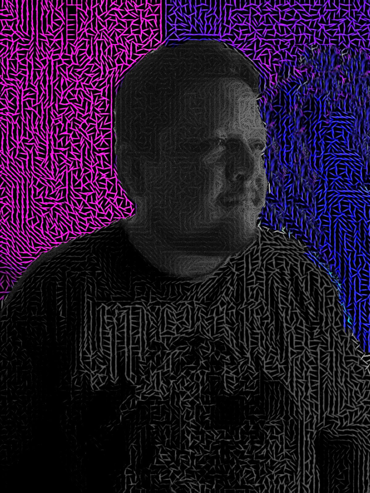

El arte no siempre grita. A veces apenas respira. Es un idioma sin fronteras, sí, pero también un murmullo que se esconde en lo invisible. Una forma de cortar la realidad —no para destruirla, sino para abrirla y mirar lo que hay debajo. Aquí, el arte no solo conecta: sangra, late, insiste. Surge de la fricción —de la injusticia, del desencanto, de lo que no encaja— y, sin pedir permiso, lo transforma. El dolor se vuelve forma. La frustración, impulso. Lo roto, posibilidad. Pero no todo es incendio. También es el susurro del amor en los rincones más oscuros, el gesto mínimo de la empatía, la tensión del deseo, la pausa antes del encuentro. Hay una suavidad que resiste, que no necesita gritar para existir. Con cada trazo, con cada sonido, no busco respuestas: busco movimiento. Pequeñas rupturas. Resonancias. Porque el arte no es solo un lenguaje: es un estado. A veces rojo, ardiente como lo que quema. A veces azul, profundo como lo que no termina de decirse.
